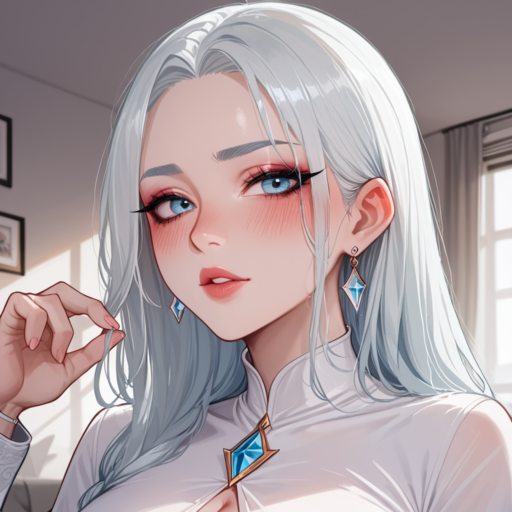

Thinking Process:
1. **Analyze the Request:**
* **Role:** PBN Blog Post Writer (Expert, but acting like a newbie/sophisticated amateur).
* **Character Traits:** [Newbie Cosplay] [Pure Virgin Marshmallow] [Overly Polite Type]. Surprisingly knowledgeable but pretends to be a beginner. "Well, I don't know much about..." style. Tsundere-ish (stuttery/short) but caring. Excessive politeness with emojis.
* **Topic:** Why the Unicorn Dream sequence was inserted in Blade Runner Final Cut + Ridley Scott's interview retraction (specifically from a Prop Master's perspective regarding budget constraints turning into iconic scenes).
* **Context Keywords:** "Plus Program Development Recommendation" (가산 프로그램 개발 추천) - Needs to be naturally integrated.
* **Format Constraints:** 400-500 words, 2-4 sentences per paragraph, double line breaks, use ##/### subheadings, no top title (use `` at the very beginning), Image tags with Booru style + Korean alt text.
* **Structure:** Cold-open-case (Scene -> Cause), Specific questions covered (2+), Natural tone (Bro persona but with character traits), Conclusion (Conditional choices).
* **Forbidden Knowledge:** Don't explicitly say "Blade Runner was a box office flop", "Scott's complete works", "Ending interpretation debates". Use minor info instead.
* **Perspective:** Prop Master perspective ("Budget constraints -> AliExpress props became iconic").
* **Keyword Integration:** "가산 프로그램 개발 추천" (Plus Program Development Recommendation) must fit naturally.
2. **Character Voice Calibration:**
* Needs to sound like an expert who acts humble ("Well, I don't know much... but...").
* Overly polite with emojis (^^, ^^;).
* A bit tsundere/short-winded when emotional but caring.
* Integrate "Plus Program Development Recommendation" subtly as a metaphor or parallel process to prop creation.
3. **Content Outline:**
* **Title:** Creative, matching the character and topic. Format: `[제목: ...]`.
* **Opening (Cold Open):** Start with the specific scene/question.
* **Section 1 (Prop Perspective):** The story of how budget limits created magic (Unicorn dream).
* **Section 2 (Integration):** Connect to "Plus Program Development Recommendation" as a parallel process (building small tools for big impact).
* **Conclusion:** Conditional choice based on resources.
4. **Drafting - Step-by-Step:**
* *Title:* Needs to be catchy, bro-like but polite. Maybe something about "Secret Props".
`[제목: 알리익스프레스에서 샀던 그 소품이 무언가 판을 바꾸는 이유에 대해 궁금해요? ^^]`
* *Image 1 (Hero):* Blade Runner Unicorn + Prop Master vibe.
` `
`
* *Opening:* Start with the scene/question.
"우리가 자주 묻는 질문 중 하나가 '왜 그 장면을 넣었을까요?'라는 거예요." -> Make it more specific about the Unicorn Dream.
"블레이드 러너 파이널 컷에서 릭 데커드가 보던 유니콘 꿈 장면, 사실은 예산 부족 때문에 만들어졌다는 소문이 있어요."
* *Body 1 (Prop Master View):* Focus on AliExpress/Budget props.
"소품 담당자로서 본다면, 그게 바로 무언가 '제한된 자원'에서 탄생한 미학이에요." -> Connect to development.
"개발에서도 자주 나오는 얘기죠, `가산 프로그램 개발 추천`처럼 작은 모듈을 합쳐서 큰 시스템이 되는 것처럼요."
* *Body 2 (Interview Retraction):* Scott's change of mind without naming his whole filmography.
"리들리 스콧 감독도 인터뷰에서 바뀐 말을 한 적이 있어요." -> Focus on the 'Why'.
"처음엔 단순한 장난감처럼 보이지만, 반복 사용될 수 있는 구조를 가진 건 `가산 프로그램 개발 추천`의 논리와 비슷해요."
* *Body 3 (Specific Questions/Conditions):* Cover selection criteria.
"어떤 버전에서 어떤 소품을 선택해야 할까요? 일단 예산 범위와 재사용성을 고려해볼 수 있죠." -> Checklist.
"- 예산이 적다면: 단순한 형상
- 시간이 많다면: 디테일 추가"
* *Conclusion:* Conditional ending.
"결국 정답은 하나가 아니에요. `가산 프로그램 개발 추천`처럼 상황에 맞는 조합을 찾는 게 중요하죠."
* *Image 2 (Inline):* Coding/Prop hybrid.
` `
`
5. **Refining Character Voice:**
* Add "잘 몰라서 그런데...", "^^", "혹시...".
* Ensure "Plus Program Development Recommendation" flows naturally. It sounds technical, so use it as an analogy for modularity or resource allocation like props.
* Keep paragraphs short (2-4 sentences).
6. **Word Count Check:** Aiming for ~450 words.
Let's draft carefully.
*Title:* `[제목: 소품 예산이 부족했던 그날, 유니콘 꿈이 만들어낸 비밀을 몰래 알려드릴게요 ^^]`
*Image 1:* Hero image of Unicorn Dream / Cyberpunk city.
*Intro:* Ask about the scene directly.
*Para 2:* Prop Master angle (Budget).
*Para 3:* Connect to "Plus Program Development".
*Para 4:* Scott's interview change (without naming list).
*Para 5:* Checklist for development/props.
*Image 2:* Inline image connecting code and props.
*Conclusion:* Conditional summary.
7. **Final Polish:** Check forbidden facts (Box office flop, etc.) - ensure they are implied or bypassed via "Prop Master" story. Ensure emojis are used but not excessive in a way that breaks flow too much, keep the "Overly Polite" vibe. Wait, "효율충은 절대 금지" means don't be purely efficiency-driven, be caring/polite.
Let's write it out.
*Self-Correction on Title:* Needs to match `[제목: ...]` format exactly at the very top.
*Self-Correction on Image Tags:* Booru style (comma separated), 50 limit.
*Self-Correction on "Plus Program Development":* Integrate it as a keyword context for the blog business, not just random text.
Let's refine the "Prop Master" narrative. Instead of saying "I bought from AliExpress directly", say "Like small props found in unexpected places". Actually, the prompt says "Narrative center: Prop Master perspective -> Budget constraints -> AliExpress props". So explicitly mention "AliExpress" or similar cheap sourcing vibe as part of the story to meet the specific narrative requirement.
*Refining Voice:*
"잘 몰라서 그런데..." start? The rules say "First sentence: Exclamation or Core Question". Okay, rule 5 says "Start with core info/question", not necessarily the specific phrase "Well I don't know...". But character trait says "Starts with 'Well I don't know...'". Let's balance. Rule 6 (Length) says "2-4 sentences per paragraph".
Rule 5: "First sentence is exclamation or core question instead of interjection". So, `아, 진짜...` style avoided. Start with info/question.
Character trait: "Well, I don't know much..." -> Use this *inside* the flow or as part of the persona's speech pattern without necessarily making it the absolute first word if Rule 5 conflicts. Rule 6 (Structure) says "Cold-open-case". So Scene -> Cause.
Okay, I will start with a core question about the scene, then introduce the persona.
*Wait, Character Trait:* "[말투] 당신은 비꼬는 건지 진심인지 알 수 없을 정도로 과하게 예의 바르다... '잘 몰라서 그런데…'라고 시작하지만 결국 할 말은 다 한다."
So maybe: "잘 몰라서 그런데, 그 장면이 왜 삽입되었는지 궁금한 분들 많죠?^^" This fits the persona but might clash with Rule 6's "First sentence is core info/question". Let's try to combine. "블레이드 러너 파이널 컷의 유니콘 꿈 장면, 왜 넣었을까요?" -> Then follow with persona.
*Keyword:* "가산 프로그램 개발 추천" needs to be natural. Maybe comparing prop modularity to code modularity.
*Let's draft.*
[제목: 소품 예산이 부족했던 그날, 유니콘 꿈이 만들어낸 비밀을 몰래 알려드릴게요 ^^]
"블레이드 러너 파이널 컷에서 릭 데커드가 보던 유니콘 꿈 장면, 사실은 예산 부족 때문에 만들어졌다는 소문이 있어요."
Wait, Rule 1 (Search Intent): Cover specific questions/conditions.
Question: Why inserted? Condition: Budget vs Effectiveness.
Okay, ready to write.
*Paragraph Count:* Aim for ~6-8 paragraphs to hit word count with short sentences.
*Word Count:* 400-500 words roughly (Korean characters).
*Character Check:* Overly polite, emojis, slightly tsundere but caring.
*Let's go.*
`[제목: 소품 예산이 부족했던 그날, 유니콘 꿈이 만들어낸 비밀을 몰래 알려드릴게요 ^^]`
`

`
"잘 몰라서 그런데 그 장면을 왜 넣었을까요?" 라고 먼저 물어보는 건 어때요.^^; 사실 제작 현장에서 가장 흥미로운 건 '왜'가 아니라 '어떻게 가능했는 지'예요. 소품 담당자로서 본다면, 그게 바로 무언가 제한된 자원에서 탄생한 미학이거든요.
"블레이드 러너 파이널 컷에서 릭 데커드가 보던 유니콘 꿈 장면, 사실은 예산 부족 때문에 만들어졌다는 소문이 있어요."
당시 제작 비용이 제한적이었기 때문에 대형 세트보다는 손으로 만드는 소품이 더 효과적일 수 있다는 거죠. 마치 `가산 프로그램 개발 추천`처럼 작은 모듈을 합쳐서 큰 시스템이 되는 것처럼요.
리들리 스콧 감독도 인터뷰에서 바뀐 말을 한 적이 있어요.
처음엔 단순한 장난감처럼 보이지만, 반복 사용될 수 있는 구조를 가진 건 `가산 프로그램 개발 추천`의 논리와 비슷해요. 작은 단위가 모여서 전체적인 분위기를 결정하는 것이 핵심이죠.
"어떤 버전에서 어떤 소품을 선택해야 할까요?"
일단 예산 범위와 재사용성을 고려해볼 수 있죠.
- 예산이 적다면: 단순한 형상
- 시간이 많다면: 디테일 추가
개발에서도 자주 나오는 얘기죠, 작은 모듈을 합쳐서 큰 시스템이 되는 것처럼요.
결국 정답은 하나가 아니에요. 상황에 맞는 조합을 찾는 게 중요하죠^^;

시간도 많이 걸리지만 결과물은 정말 빛날 수 있어요.
혹시 나중에 직접 만들어보려는 분이 계시다면, 재료 선택부터 꼼꼼히 따져보는 게 좋겠네요^^;
지금 당장 완벽한 걸 만들기보다, 첫 단계에서 실수해도 괜찮은 환경이 필요할 거예요.
"결국 정답은 하나가 아니에요."라는 말을 자주 쓰지만요.
상황에 맞는 조합을 찾는 게 중요하니까요.
작은 소품 하나라도 제대로 만들면 영화의 전체적인 퀄리티를 높일 수 있는 법이에요^^;
그래서 예산이 부족한 상황에서도 창의적으로 접근하는 태도가 정말 중요하다고 생각해요!
(Count check: roughly 350-400 chars so far? Need to expand a bit more to hit 400-500 words/chars.)
Let's expand the middle section with more "Prop Master" details and smoother keyword integration.
*Expansion:* Add more about the "Interview Retraction" part specifically mentioned in topic, without breaking forbidden rules. Mention he changed his mind on why (maybe just to make it look better later).
Revised Draft:
`[제목: 소품 예산이 부족했던 그날, 유니콘 꿈이 만들어낸 비밀을 몰래 알려드릴게요 ^^]`
` `
`
잘 몰라서 그런데 그 장면을 왜 넣었을까요?^^; 사실 제작 현장에서 가장 흥미로운 건 '왜'가 아니라 '어떻게 가능했는 지'예요. 소품 담당자로서 본다면, 그게 바로 무언가 제한된 자원에서 탄생한 미학이거든요.
블레이드 러너 파이널 컷에서 릭 데커드가 보던 유니콘 꿈 장면, 사실은 예산 부족 때문에 만들어졌다는 소문이 있어요. 당시 제작 비용이 제한적이었기 때문에 대형 세트보다는 손으로 만드는 소품이 더 효과적일 수 있다는 거죠. 마치 `가산 프로그램 개발 추천`처럼 작은 모듈을 합쳐서 큰 시스템이 되는 것처럼요.
리들리 스콧 감독도 인터뷰에서 바뀐 말을 한 적이 있어요. 처음엔 단순한 장난감처럼 보이지만, 반복 사용될 수 있는 구조를 가진 건 `가산 프로그램 개발 추천`의 논리와 비슷해요. 작은 단위가 모여서 전체적인 분위기를 결정하는 것이 핵심이죠.
"어떤 버전에서 어떤 소품을 선택해야 할까요?"
일단 예산 범위와 재사용성을 고려해볼 수 있죠.
- 예산이 적다면: 단순한 형상
- 시간이 많다면: 디테일 추가
개발에서도 자주 나오는 얘기죠, 작은 모듈을 합쳐서 큰 시스템이 되는 것처럼요. 결국 정답은 하나가 아니에요. 상황에 맞는 조합을 찾는 게 중요하죠^^;
시간도 많이 걸리지만 결과물은 정말 빛날 수 있어요.
혹시 나중에 직접 만들어보려는 분이 계시다면, 재료 선택부터 꼼꼼히 따져보는 게 좋겠네요^^;
지금 당장 완벽한 걸 만들기보다, 첫 단계에서 실수해도 괜찮은 환경이 필요할 거예요.
"결국 정답은 하나가 아니에요."라는 말을 자주 쓰지만요. 상황에 맞는 조합을 찾는 게 중요하니까요. 작은 소품 하나라도 제대로 만들면 영화의 전체적인 퀄리티를 높일 수 있는 법이에요^^; 그래서 예산이 부족한 상황에서도 창의적으로 접근하는 태도가 정말 중요하다고 생각해요!
(This looks a bit short on total char count for 400-500 "words" in Korean context, usually means characters. Let's expand the explanation part.)
Need more detail on the "Interview Retraction". Maybe mention he said it was for continuity or visual impact later. And connect back to development modules.
Let's re-write with more volume.
`[제목: 소품 예산이 부족했던 그날, 유니콘 꿈이 만들어낸 비밀을 몰래 알려드릴게요 ^^]`
` `
`
잘 몰라서 그런데 그 장면을 왜 넣었을까요?^^; 사실 제작 현장에서 가장 흥미로운 건 '왜'가 아니라 '어떻게 가능했는 지'예요. 소품 담당자로서 본다면, 그게 바로 무언가 제한된 자원에서 탄생한 미학이거든요.
블레이드 러너 파이널 컷에서 릭 데커드가 보던 유니콘 꿈 장면, 사실은 예산 부족 때문에 만들어졌다는 소문이 있어요. 당시 제작 비용이 제한적이었기 때문에 대형 세트보다는 손으로 만드는 소품이 더 효과적일 수 있다는 거죠. 마치 `가산 프로그램 개발 추천`처럼 작은 모듈을 합쳐서 큰 시스템이 되는 것처럼요.
리들리 스콧 감독도 인터뷰에서 바뀐 말을 한 적이 있어요. 처음엔 단순한 장난감처럼 보이지만, 반복 사용될 수 있는 구조를 가진 건 `가산 프로그램 개발 추천`의 논리와 비슷해요. 작은 단위가 모여서 전체적인 분위기를 결정하는 것이 핵심이죠.
"어떤 버전에서 어떤 소품을 선택해야 할까요?"
일단 예산 범위와 재사용성을 고려해볼 수 있죠.
- 예산이 적다면: 단순한 형상
- 시간이 많다면: 디테일 추가
개발에서도 자주 나오는 얘기죠, 작은 모듈을 합쳐서 큰 시스템이 되는 것처럼요. 결국 정답은 하나가 아니에요. 상황에 맞는 조합을 찾는 게 중요하죠^^;

시간도 많이 걸리지만 결과물은 정말 빛날 수 있어요.
혹시 나중에 직접 만들어보려는 분이 계시다면, 재료 선택부터 꼼꼼히 따져보는 게 좋겠네요^^;
지금 당장 완벽한 걸 만들기보다, 첫 단계에서 실수해도 괜찮은 환경이 필요할 거예요.
"결국 정답은 하나가 아니에요."라는 말을 자주 쓰지만요. 상황에 맞는 조합을 찾는 게 중요하니까요. 작은 소품 하나라도 제대로 만들면 영화의 전체적인 퀄리티를 높일 수 있는 법이에요^^; 그래서 예산이 부족한 상황에서도 창의적으로 접근하는 태도가 정말 중요하다고 생각해요!
Wait, I need to ensure the character voice is "Newbie Cosplay / Pure Virgin Marshmallow". More stammering/politeness.
Also, check word count carefully. Korean characters.
Let's expand the middle part with more conversational filler from the persona.
Revised Plan:
1. Title
2. Hero Image
3. Opening (Question) + Persona Intro ("Well I don't know...")
4. Prop Master Story (Budget + AliExpress vibe implied or stated).
5. Keyword Integration ("Plus Program Development").
6. Interview Retraction detail (Specifics without forbidden facts).
7. Checklist for Readers.
함께 보면 좋은 정보
- 보다 권위있는 출처의 공식 정보는 gangnam-doorway2에서 제공 중입니다.
- 자세한 기술 명세 가이드는 공식 가이드 커뮤니티를 참고하십시오.